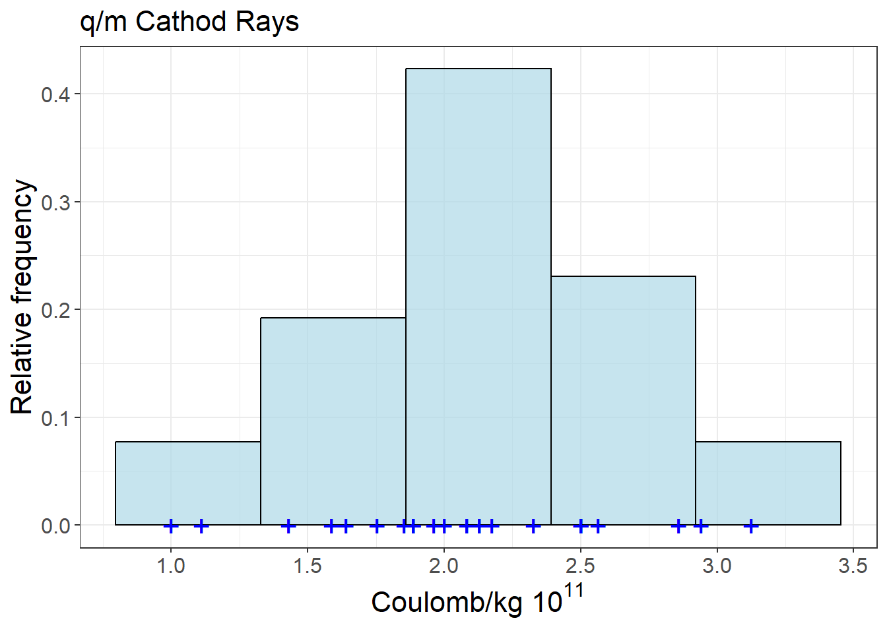
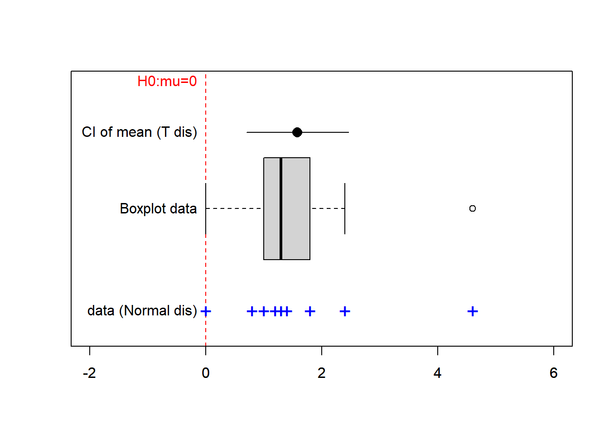
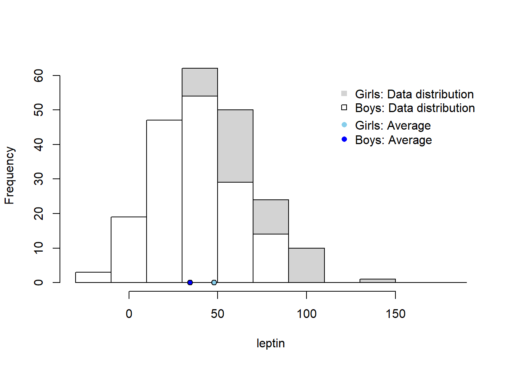
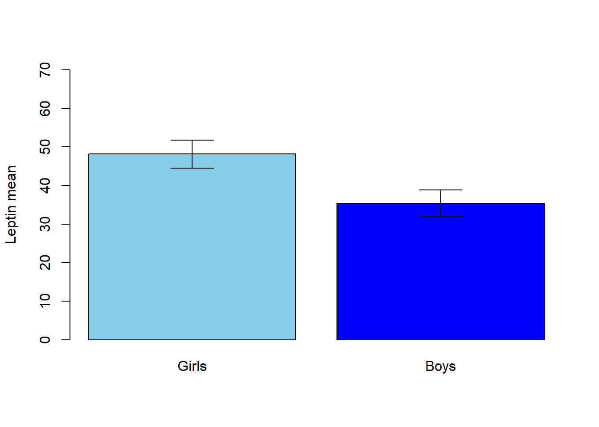
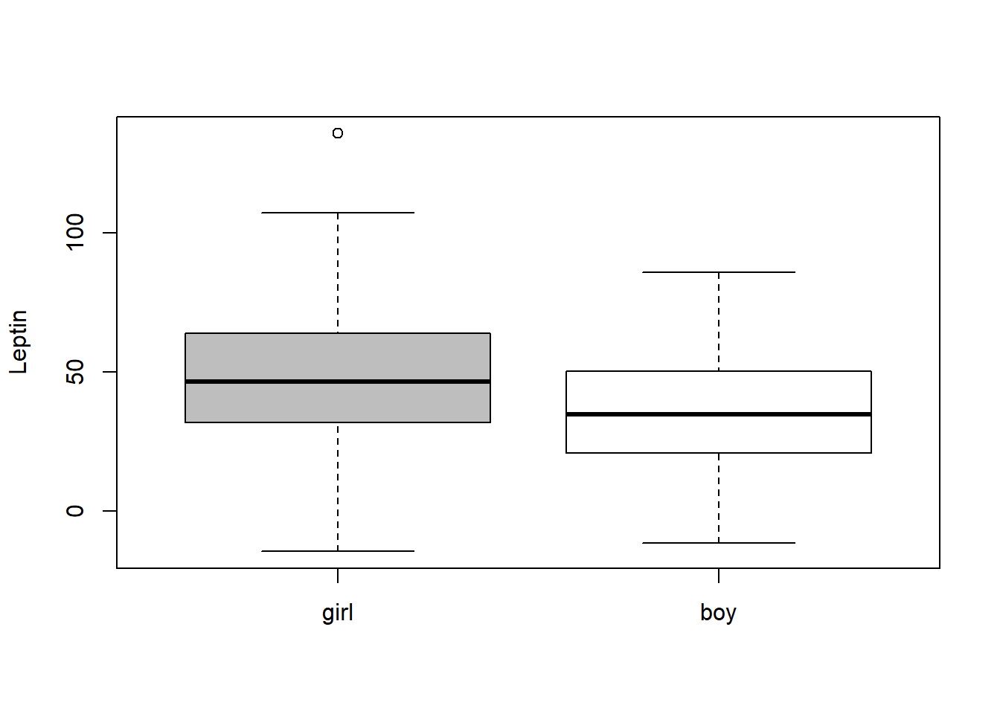
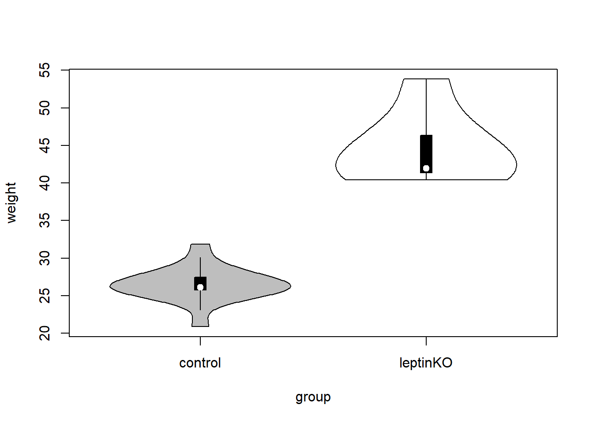
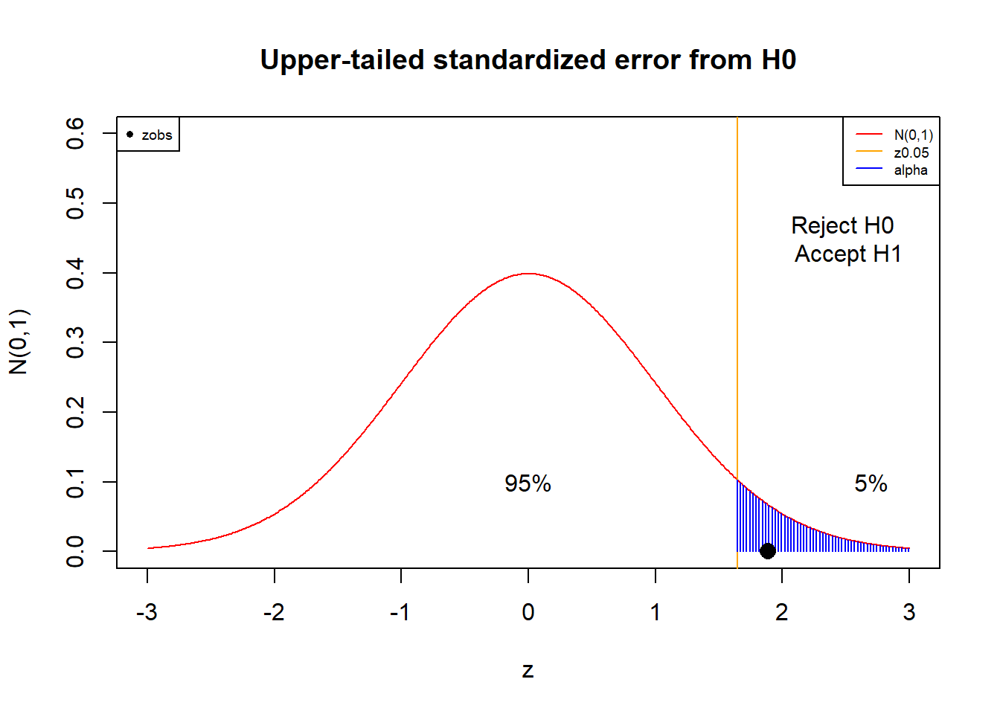

Chapter 16 Mean differences between two samples
16.1 Objective
In this chapter we will see how to test statistical independence of one continuous variable and two discrete conditions or groups.
We will see the case where \(n\) is large, where we can use a \(z\)-test. We will also introduce the \(t\)-test that allows testing for the cases of small \(n\) with equal and unequal variances.
We will introduce the concepts with the reanalysis of real data from reported studies relating sex differences in leptin levels.
16.2 Differece in means between two groups
We will consider an random variable of interest that follows a normal probability model
\[ Y \rightarrow N(\mu, \sigma^2)\]
which we aim to measure several times under two different conditions or groups called \(A\) and \(B\). We want to determine if the expected value (mean) of the random variable changes between the conditions.
When testing a hypothesis for the mean, that is a change of mean in a new condition, we often do not know its value in the status quo \(\mu_0\). Therefore, we often infer the mean in a condition \(A\) as the null (controlled condition) and then compare it with the mean in a new condition, where we have our research interest, condition \(B\) (treatment condition). This is the case of testing for example differences in clinical outcomes between cases and controls, or between administration of a drug and a placebo.
Example (leptin)
Leptin is an adipose tissue hormone that creates the sensation of satiety after eating. We want to study the serum leptin levels in obese children (PMID: 18755049) under different conditions, such as sex. We therefore assume two conditions: \(A:female\) and \(B:male\) and assume that
- the level of leptin in a randomly chosen girl has a probability density
\[Y_A \rightarrow N(\mu_A, \sigma_A^2)\]
- the level in a boy has a probability density
\[Y_B \rightarrow N(\mu_B, \sigma_B^2)\]
16.3 Data
One random experiment has two variables: \((y, c)\).
\(Y\) a continuous variable, whose observation produces the outcome of interest
\(C \in \{A,B\}\) is a discrete variable with two possible outcomes, one for each experimental condition.
The repetition of the random experiment \(n\) times is therefore a table such as
| \(subject\) | \(Y\) | \(C\) |
|---|---|---|
| \(1\) | \(1.2\) | \(A\) |
| \(2\) | \(0.9\) | \(A\) |
| … | … | … |
| \(n\) | \(1.4\) | \(B\) |
For example, subject \(1\) had outcome \(1.2\) for \(Y\) under condition \(A\).
Example (leptin)
In the leptin example, we have that the continuous outcome is the level of leptin in a subject
- \(leptin \in (0, 200)\)
And that the condition is the sex of the subject:
- \(sex \in \{girl:A,boy:B\}\)
\(190\) girls were tested for the level of leptin, while \(166\) boys were included in the studied. The first six subjects of the studied were
## leptin sex
## 1 32.81111 girl
## 2 41.76219 girl
## 3 90.24100 girl
## 4 49.91078 girl
## 5 51.50370 girl
## 6 94.47826 girlWhile the last subjects were
## leptin sex
## 351 57.13473 boy
## 352 -10.23757 boy
## 353 24.82894 boy
## 354 37.01268 boy
## 355 14.39215 boy
## 356 41.87943 boyWe want to know whether boys have different levels of leptin than girls. In other words, if the mean levels of leptin change between sexes.
Research question: is leptin statistically dependent from Sex?
16.4 Difference between means
We took leptin levels conditioned to each sex, and observed:
\(n_A=190\) girls had a mean of \(\bar{y}_A=48.13\) and \(s= 25.44\)
\(n_B=166\) boys had a mean of \(\bar{y}_B=35.42\) and \(s=21.99\)
Bar plots for the means are popular, although they do not show the spread of the data

We can draw histograms of leptin for each group to have a better idea of the distributions

Or we can overlay the histograms horizontally

The plots suggest that boys have lower levels of leptin on average but is the difference between the averages \(\bar{y}_A\) and \(\bar{y}_B\) statistically significant?
How confident are we on the magnitude of the difference? That is, could have we got this lower levels of lepting in boys by chance alone (null hypothesis) or there is difference that cannot be fully explained by chance (alternative hypothesis)?
16.5 Hypothesis test
Let us formulate the hypothesis contrast
\(H_0: \mu_A=\mu_B\) The null hypothesis (status quo) is that both groups have the same mean.
\(H_1: \mu_A \neq \mu_B\) The alternative hypothesis (research interest) is that the means are different between groups.
Only one can be true. How would the data decide? To make things easier let us redefine the contrast.
If we consider \(\delta\), the difference between means \(\delta=\mu_A-\mu_B\), then the hypotheses can be written as
- \(H_0: \delta=0\)
- \(H_1: \delta\neq 0\)
Either the difference between the means is zero or not. \(\delta\) is the parameter of interest in our study, and to test hypotheses on it, we need to find an estimator for it.
16.6 Estiamtor of the mean difference
The statistic \(D=\bar{Y}_A-\bar{Y}_B\), that is the difference in averages, is an estimator of \(\delta\). In particular, we can show that the the estimator is
- unbiased because its expected value is the parameter
\[E(D)=E(\bar{Y}_A-\bar{Y}_B)=\mu_A-\mu_B=\delta\]
- and consistent because its variance gets smaller when \(n=n_A+n_B\) gets bigger
\[V(D)=V(\bar{Y}_A-\bar{Y}_B)=\frac{\sigma^2_A}{n_A}+\frac{\sigma^2_B}{n_B}\]
This means that we can take one observed value of \(D\), that is \(d_{obs}\), for the estimation of the parameter \(\delta\).
It is important to have a clear idea of the different components in the estimation and the hypothesis test, as they are shown bellow

Remember that, for instance, the average \(\bar{Y}_A\) is also called the sample mean, and it has a distribution that is centered on \(\mu_A\) and has variance \(\frac{\sigma_A^2}{n_A}\).
16.7 Standardized error
As both \(Y_A\) and \(Y_B\) are normal and independent variables, their averages are normal and so it is their difference \(D\). Therefore, the standardization of \(D\) is arrpoximately standard normal
\[Z=\frac{D-\delta}{\sqrt{V(D)}}=\frac{\bar{Y}_A-\bar{Y}_B -\delta}{\sqrt{\frac{s^2_A}{n_A}+\frac{s^2_B}{n_B}}} \rightarrow_{approx} N(0,1)\]
when both \(n_A\) and \(n_B\) are large. It is approximate because as we do not know the variances \(\sigma^2_A\) and \(\sigma^2_B\), we estimated them with \(s_A^2\) and \(s_B^2\). We can also use this approximation when we do not know the distributions of \(Y_A\) and \(Y_B\), as a result of the central limit theorem.
16.8 Standardized error for the null
If the null hypothesis is true (\(\delta=0\)), then when we estimate \(\delta\) with \(D\) we make an error. The standardized error from the null hypothesis is the statistic
\[Z=\frac{\bar{Y}_A-\bar{Y}_B}{\sqrt{\frac{s_A^2}{n_A}+\frac{s^2_B}{n_B}}}\] that follows a standard normal distribution.
To test the hypothesis we then ask if the observed \(z_{obs}\) is within the acceptance region of the null hypothesis.
In particular, we ask: is the probability of observing a more extreme value than \(z_{obs}\) lower than \(\alpha=0.05\) if the null hypothesis is true?
The value of \(z_{obs}\) is the standardized value of the observed difference between the averages:
\[z_{obs}=\frac{d_{obs}}{\sqrt{\frac{s_A^2}{n_A}+\frac{s^2_B}{n_B}}}\]
For our data, we have that the observed standardized mean difference is
\[z_{obs}=\frac{\bar{y}_A-\bar{y}_B }{\sqrt{\frac{s^2_A}{n_A}+\frac{s^2_B}{n_B}}}=\frac{48.13-34.42}{\sqrt{\frac{647.58}{190}+\frac{483.62}{166}}}=5.053\]
Since our hypothesis is two tailed then the the two-tailed \(pvalue\) is
\[pvalue=2(1-\phi(5.053))=4.32 \times 10^{-7}\]
which is much lower than \(\alpha\).
Therefore, we reject the null hypothesis that \(H_0:\delta=0\) that is that the leptin levels in obese children are equal between boys and girls. In other words, we have strong evidence that the mean leptin levels between sexes are different.
In Python
import pandas as pd
import math
from scipy.stats import norm
data = pd.read_csv('https://alejandro-isglobal.github.io/SDA/data/leptin_sex.txt',
sep='\t')
groupA = data[data['sex']=="girl"]['leptin']
groupB = data[data['sex']=="boy"]['leptin']
yA_bar = np.mean(groupA)
yB_bar = np.mean(groupB)
s2A = np.var(groupA, ddof=1)
s2B = np.var(groupB, ddof=1)
d = (yA_bar-yB_bar)/math.sqrt(s2A/len(groupA)+s2B/len(groupB))
pval= 2*(1-norm.cdf(d))
d, pval(5.053890638648715, 4.32899547764265e-07)Example (Abstract)
Abstract:
Obesity rates are different between boys and girls, suggesting that the physiopathology of the disease is different between the sexes.
In this study, we tested the hypothesis that the leptin levels in serum are different between boys and girls.
We analyzed data from 190 obese girls and 166 obese boys and found a significant difference in leptin between sexes (mean difference \(13.6\), \(P=2.195757 \times 10^{-7}\))

Note that in a report we usually add the confidence intervals for the means. Non-overlapping confidence intervals also indicate that the difference between means is statistically significant (reject the null).
Another popular way to visualize the distributional differences between the groups is to use a box plot

In this plot, we do not show the means but a summary of the distribution properties of the data at each condition. Remember that the properties are the median (the middle line), the quartiles (the box edges) and the \(5\%\) and \(95\%\) quantiles (the wiskers).
Finally, you would see that violin plots are also widely used. These are boxplots with the (smoothed) mirrowed histograms overlayed. Here, you do not see the everages of each group but the modes (peaks of the hitograms). However, you get the idea that the distribution for girls higher than the distribution for boys.

16.9 Mean differences when \(n\) is small
In a study that wanted to test the effect of leptin in neurodevelopment, 7 male mice had their leptin gene knocked out. And, they could not produce the horomone. While 16 mice were left with normal leptin function (PMID:30694175). These are called wild type. An initial question was to test the effect of leptin on the body weight of the animals. Is the mean weight of the animals different between wild types and knock-outs?
We assume that
- the weight of the control animals (wild type) has a probability density
\[Y_A \rightarrow N(\mu_A, \sigma^2)\]
- the weight of the animals with no leptin gene has a probability density
\[Y_B \rightarrow N(\mu_B, \sigma^2)\]
- both distributions have the same variance \(\sigma^2\).
16.10 Data
One random experiment in this study has two outcomes: \((weight, leptin)\).
Continuous variable (outcome of interest)
- \(weigth \in (20, 60)\)
Categorical variable:
- \(leptin \in \{control:A,knockout:B\}\)
The data looks like
## weight group
## 1 27.67 Control
## 2 27.40 Control
## 3 25.77 Control
## 4 25.60 Control
## 5 25.03 Control
## 6 25.90 Control
## 7 26.67 Control
## 8 25.60 Control
## 9 28.93 Control
## 10 31.83 Control
## 11 25.90 Control
## 12 26.30 Control
## 13 27.90 Control
## 14 26.77 Control
## 15 25.83 Control
## 16 20.87 Control
## 17 46.57 leptinKO
## 18 40.43 leptinKO
## 19 41.97 leptinKO
## 20 41.17 leptinKO
## 21 41.57 leptinKO
## 22 46.17 leptinKO
## 23 53.83 leptinKO16.11 Difference between means
We take mice weights conditioned to each lepting group, and observed:
\(n_A=16\) control mice had a weight mean of \(\bar{y}_A=26.49\) and \(s_A=2.24\)
\(n_B=7\) leptin KO mice had a weight mean of \(\bar{y}_B=44.53\) and \(s_B=4.77\)
We can draw violin plots per group

We see that the distributions are different and in particular that mice without leptin (leptin KO) have on average higher weights. Can we have a statistical test for this difference?
16.12 Hypothesis test
We can again formulate the hypothesis on the difference between means \(\delta=\mu_{control} -\mu_{leptin}\)
\(H_0: \delta=0\). The null hypothesis (status quo) assumes that both mice (control, leptin KO) have the same mean weight.
\(H_1: \delta \neq 0\). Therefore, the alternative hypothesis is that the mean weigth is different between groups.
16.13 Estimator of the mean difference
The statistic \(D=\bar{Y}_A-\bar{Y}_B\) is again an unbiased estimator of \(\delta\)
\[E(D)=\delta\]
Since the weights for \(A\) and \(B\) are normal variables with the same variance \(\sigma^2\) each sample variance in each group is an estimator of \(\sigma^2\). That is \[\hat{\sigma}^2=s^2_A=s^2_B\]
then (Theorem) the standardized error
\[T=\frac{\bar{Y}_A-\bar{Y}_B -\delta}{\sqrt{s_p^2(\frac{1}{n_A}+\frac{1}{n_B})}} \rightarrow T(n_A+n_B-2)\]
follows exactly a T-distribution with \(n_A+n_B-2\) degrees of freedom.
The pooled variance \(s_p^2\), is an estimator of \(\sigma^2\)
\[\hat{\sigma}^2=s_p^2= \frac{(n_A-1) s^2_A+(n_B-1) s^2_B}{n_A+n_B-2}\]
16.14 Standardized error for the null
If the null hypothesis is true (\(\delta=0\)), then when we estimate \(\delta\) with \(D\) we make an error. The standardized error from the null hypothesis is the statistic
\[T=\frac{\bar{Y}_A-\bar{Y}_B }{\sqrt{s_p^2(\frac{1}{n_A}+\frac{1}{n_B})}} \rightarrow T(n_A+n_B-2)\]
that follows a T-distribution.
To test the hypothesis we then ask if the observed \(t_{obs}\) falls within the acceptance region of the null hypothesis.
In particular, we ask: is the probability of observing a more extreme value than \(t_{obs}\) lower than \(\alpha=0.05\), if the null hypothesis is true?
The value of \(t_{obs}\) is the standardized value of the observed difference between the averages:
\(t_{obs}=\frac{d_{obs}}{\sqrt{s_p^2(\frac{1}{n_A}+\frac{1}{n_B})}}\)
\[=\frac{\bar{y}_A-\bar{y}_B }{\sqrt{\frac{s^2_p}{n_A}+\frac{s^2_p}{n_B}}}=\frac{26.49-44.53}{\sqrt{\frac{10.12}{16}+\frac{10.12}{7}}}=-12.508\]
The two-tailed \(pvalue\) of \(t_{obs}\) is
\[pvalue=2(1-F_{t,21}(12.508))=3.37 \times 10^{-11}\]
which is lower than \(\alpha=0.05\).
Therefore, the data shows a very significant increase in \(18.03\)gr (\(P=3.376854 \times 10^{-11}\)) in weight between the wild-type mice and leptin knockouts. “Absence of leptin signaling in early life alters the energy balance and predisposes the animals to obesity”, as quoted from the original article.
in Python
import numpy as np
from scipy import stats
data = pd.read_csv('https://alejandro-isglobal.github.io/SDA/data/leptin.txt',
sep='\t')
groupA = data["Control"]
groupB = data["LepNull"]
stats.ttest_ind(groupA, groupB, equal_var=True, nan_policy='omit')Ttest_indResult(statistic=-12.507930602554847, pvalue=3.377211689857233e-11)16.15 Unequal variances
The box plot suggests that the variances for each group are different because the box for the control group is thinner (less dispersed) than the box for the leptin KO group. Therefore it is better to assume that
- the weight of the control animals (wild type) has a probability density
\[Y_A \rightarrow N(\mu_A, \sigma_A^2)\]
- the weight of the animals with no leptin has a probability density
\[Y_B \rightarrow N(\mu_B, \sigma_B^2)\]
The standardized error for the null hypothesis (\(\delta=0\))
\[T=\frac{\bar{Y}_A-\bar{Y}_B }{\sqrt{\frac{s_A^2}{n_A}+\frac{s_B^2}{n_B}}} \rightarrow_{aprox} T(\nu)\] approximately follows a t-distribution with \[\nu=\frac{(\frac{s_A^2}{n_A}+\frac{s_B^2}{n_B})^2}{\frac{(s_A^2/n_B)^2}{n_A-1}+\frac{(s_B^2/n_B)^2}{n_B-1}}\] degrees of freedom. The brilliant idea of Welsh was to fix the form of the variance of \(D\) (denominator of \(T\)), and then ask which was the closest \(t\)-distribution that would describe \(T\). For that he “only” needed to adjust the degrees of freedom. This is called a Welsh test.
In Python
import numpy as np
from scipy import stats
data = pd.read_csv('https://alejandro-isglobal.github.io/SDA/data/leptin.txt',
sep='\t')
groupA = data["Control"]
groupB = data["LepNull"]
stats.ttest_ind(groupA, groupB, equal_var=False, nan_policy='omit')Ttest_indResult(statistic=-9.541047987836473, pvalue=2.4443518964606636e-05)
Therefore, the data still shows a very significant increase in \(18.03\)gr (\(P=2.444 \times 10^{-5}\)) in weight between the wild-type mice and leptin knockouts (under a more appropriate test).

16.16 Questions
1) We test for the difference between the means of two random variables when we have measured
\(\qquad\)a: two continuous random variables; \(\qquad\)b: two categorical random variables; \(\qquad\)c: one dichotomic variable and one continuous random variable; \(\qquad\)d: any categorical variable and one continuous random variable;
2) The statistic \(D=\bar{Y}_A-\bar{Y}_B\) estimates
\(\qquad\)a: The difference between the averages of \(Y_A\) and \(Y_B\); \(\qquad\)b: The difference between the means of \(Y_A\) and \(Y_B\); \(\qquad\)c: The variation of \(\bar{Y}_A\) with respect to \(\bar{Y}_B\); \(\qquad\)d: \(d_{obs}\)
3) We can use a \(Z\)-test only when
\(\qquad\)a: we have a large sample of the continuous variable in one of the conditions; \(\qquad\)b: we have large samples of the continuous variable in each condition; \(\qquad\)c: the variances of the continuous variable are equal in each conditions; \(\qquad\)d: when the distributions of the continuous variable in each condition are normal
4) We can use a \(t\)-test only when
\(\qquad\)a: we have small samples of the continuous variable in each condition; \(\qquad\)b: the distributions of the continuous variable in each condition are normal; \(\qquad\)c: \(D\) is unbiased; \(\qquad\)d: we cannot use a \(Z\)-test
5) For the data
| \(subject\) | \(Y\) | \(C\) |
|---|---|---|
| \(1\) | \(1.1\) | \(A\) |
| \(2\) | \(0.9\) | \(A\) |
| \(3\) | \(0.8\) | \(B\) |
| \(4\) | \(0.6\) | \(B\) |
assuming that \(Y\) is normally distributed, which is the best test?
\(\qquad\)a: \(t\)-test with equal variances \(\qquad\)b: \(t\)-test with unequal variances \(\qquad\)c: \(z\)-test with equal variances \(\qquad\)d: \(z\)-test with unequal variances
16.17 Practice
Load leptin data https://alejandro-isglobal.github.io/SDA/data/dataleptin.txt
Test the hypothesis that in the control animals, the weight of females is different than the weight of males
Test the hypothesis that the leptin KO animals have higher weight than the KO animals with supplemented leptin
Make a bar plot and a boxplot for the latter case. Compute the confidence intervals for the weight, in each group.